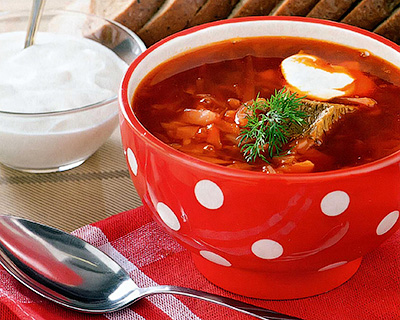
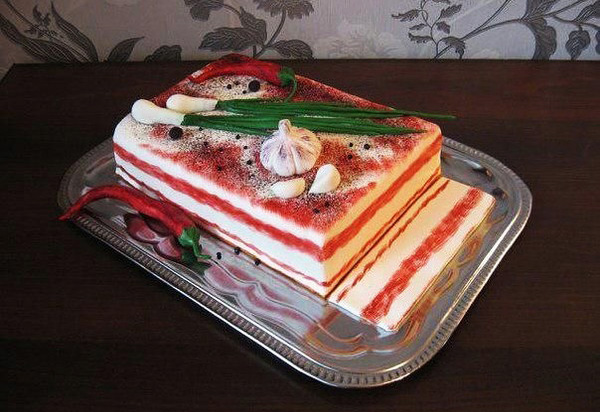
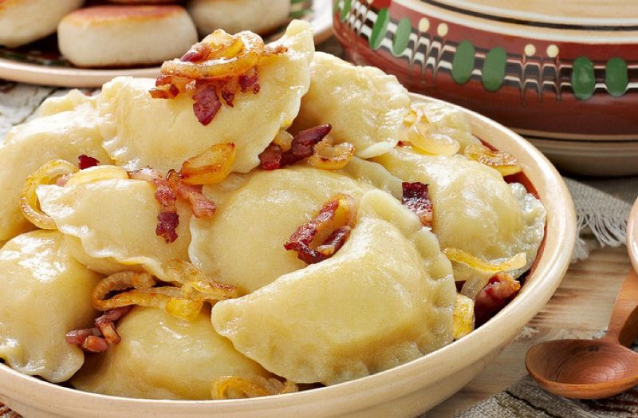
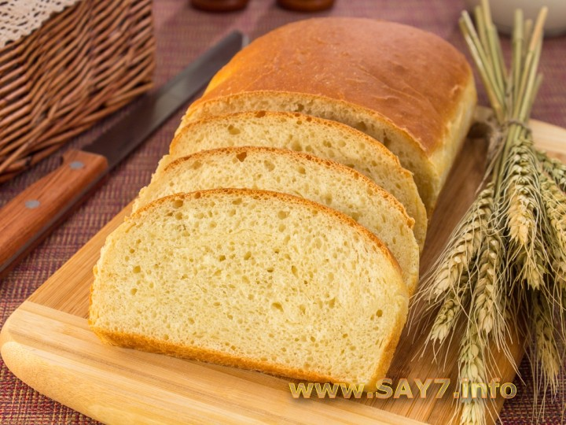

Перша національна їжа - це борщ
Борщ приготовляється з буряка,капусти,моркви,картопля,томатний сік.
Друга їжа - це сало
Щоб зробити сало треба:сало,часник,перець чорний,сіль,лавровий лист.
Третя їжа - вареники
Щоб зробити вареники треба 2 стакани муки, 1 стакан окропу і сіль.Для начинки:4-5 картоплі,1 луковиця, сіль, чорний перець і соняшникова олія
Ще національна їжа - це хлеб
Хліб дає здоров'я,сили. Хліб - могучій. А щоб зробити його самому треба потрудитися.
І остання їжа - голубці

Голубці — страва української кухні, також притаманна кухні Східної Європи та Середнього Сходу. Страва готується з листя свіжої чи кислої капусти та начинки з м'яса, рису чи гречки, кукурудзяних чи пшоняних круп, картоплі, квасолі, грибів, цибулі, моркви та прянощів.
Більше інформації знаходиться на вікіпедії